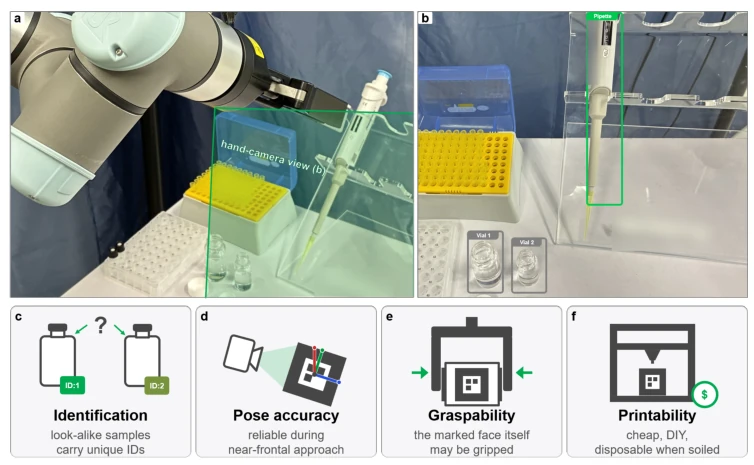
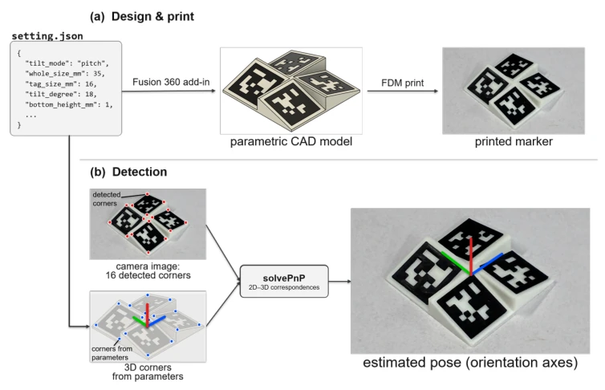
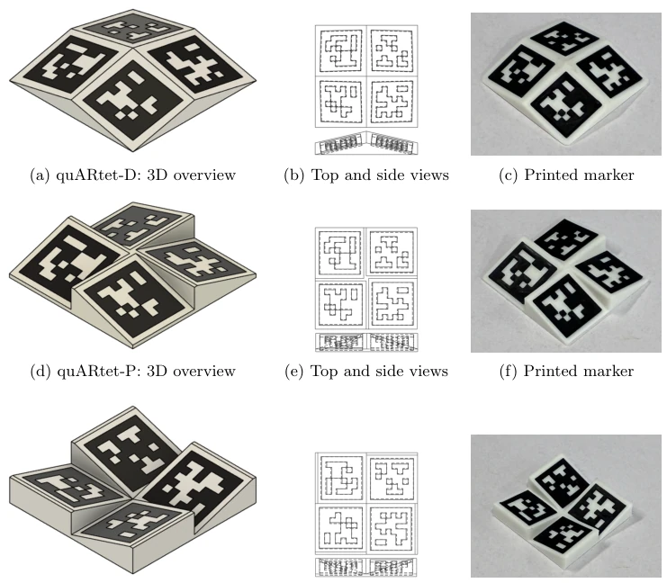
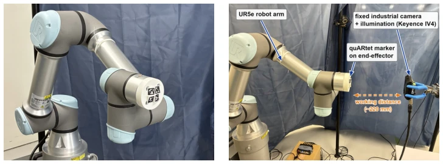
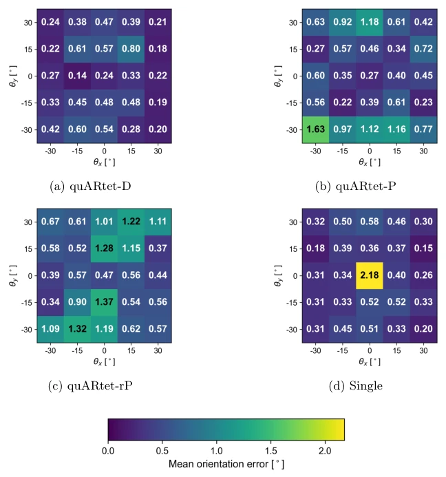
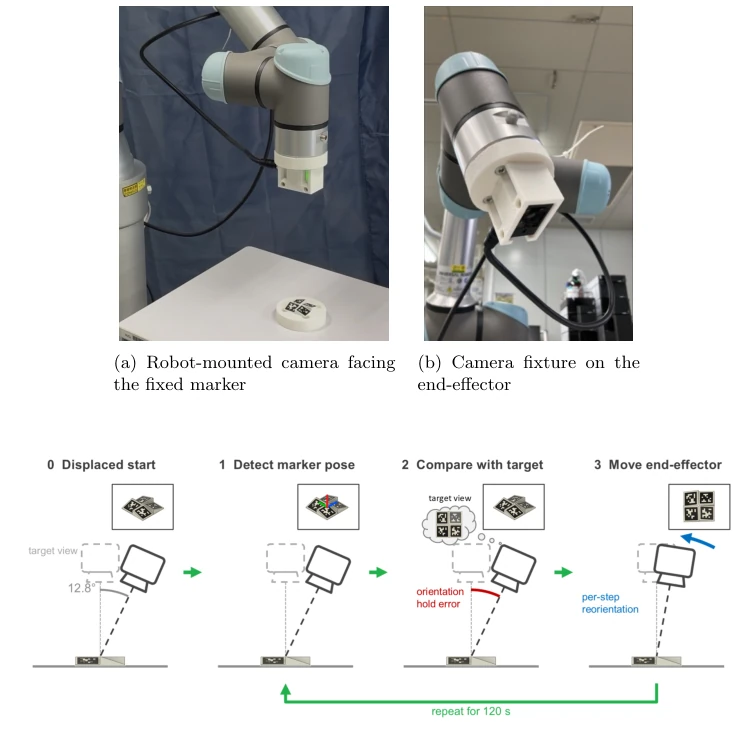
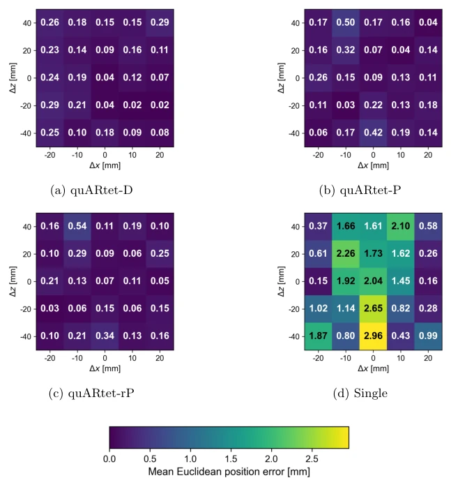
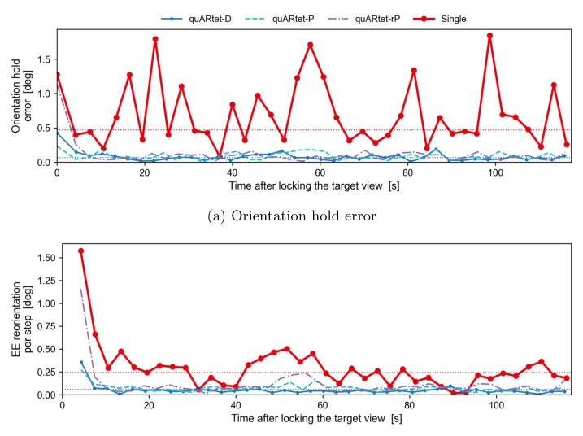
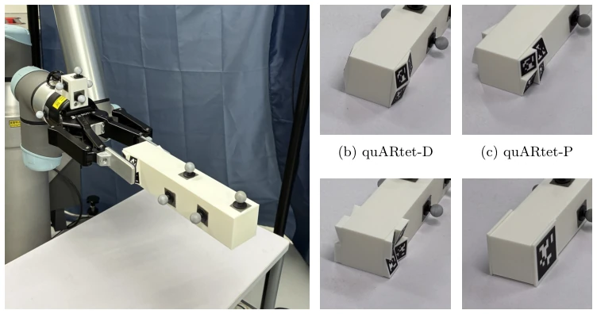
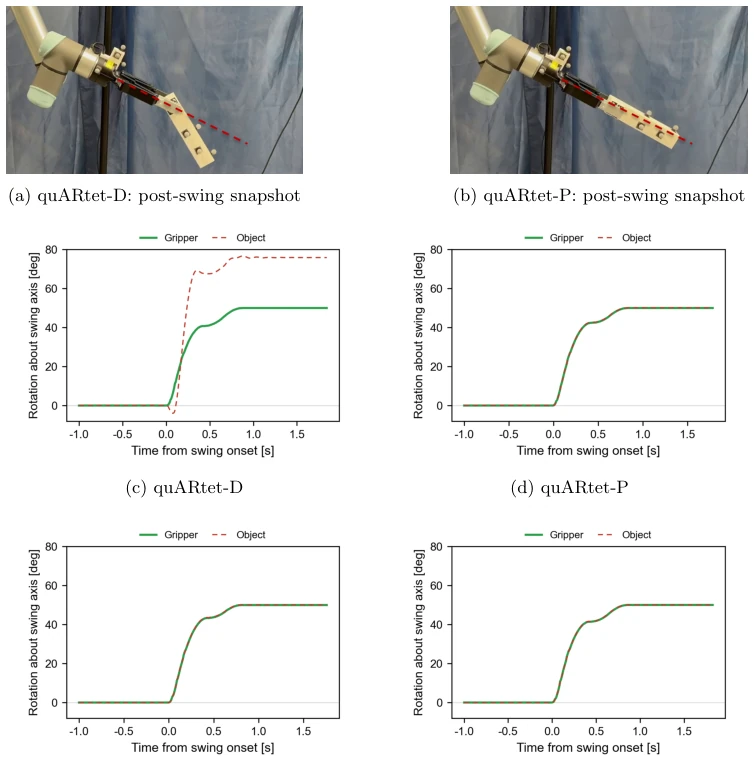

这篇论文终于治好了 AprilTag 的“正面恐惧症”。单平面标签在正对视角下姿态解算会镜像翻转，这是老生常谈的问题。作者没搞复杂的深度学习，而是用 3D 打印搞了个“四角倾斜”的 fiducial。亮点是配置驱动，CAD 和检测模型共用一个 JSON，省了手动测量。但吐槽点也很明显：为了精度牺牲了抓握面，Diagonal 布局虽然姿态稳，但没法用平行夹爪抓；Pitch 布局能抓，但斜视角误差大。这本质上是在“看得准”和“抓得住”之间做物理妥协，而不是算法突破。对于实验室自动化来说，是个实用的工程补丁，但别指望它能解决所有透明物体感知难题。
This paper finally cures AprilTag's "frontal fear". Single-plane tags suffer from mirror flipping in pose estimation under frontal views, which is a well-known issue. The authors did not employ complex deep learning, but instead used 3D printing to create a "four-corner tilted" fiducial. The highlight is configuration-driven, where CAD and detection models share a single JSON, saving manual measurement. But the drawbacks are also obvious: accuracy is sacrificed for grasping surface; the Diagonal layout is stable in pose but cannot be grasped by parallel grippers; the Pitch layout can be grasped but has large errors in oblique views. This is essentially a physical compromise between "seeing accurately" and "grasping securely", not an algorithmic breakthrough. For laboratory automation, it is a practical engineering patch, but do not expect it to solve all transparent object perception challenges.
Laboratory automation often requires manipulating transparent or reflective vessels, where visual features are weak [3, 4]. Although printed encoded fiducials are low cost [6], single-plane tags suffer from vanishing perspective distortion when the robot approaches the target (near frontal view), leading to mirror ambiguity in pose estimation [11, 12, 13]. Existing non-planar polyhedral markers can recover perspective clues, but they protrude from the marker surface, hindering parallel gripper contact [14, 15]. In short, improving geometric information often comes at the cost of sacrificing the grasping surface. This paper aims to find a marker geometric design that both improves near-frontal pose estimation and retains the gripper contact plane, meeting the plug-and-play and low-cost requirements of laboratory automation.

Fig. 1: Target context and the four practical demands on a laboratory fiducial. (a) A robot operates among weakly textured, transparent, or specular labware within the hand-camera field of view. (b) The hand-camera view, annotated for illustration: the camera must distinguish the pipette to be picked (green box) from two visually similar transparent vials (gray boxes). (c)–(f) The marker must provide identification, reli- able pose estimation during a near-frontal approach, access for grasping, and low-cost printability.
The overall process is configuration-driven: a single `setting.json` defines both the CAD model (generated by Fusion 360 plugin) and the 3D corner coordinates on the detection side. Physically, four AprilTags are tilted into a compact square base, with the tilt angle set to 18°. During detection, the AprilTag detector extracts 2D corners of visible tags, paired with predefined 3D coordinates in the config file, solving for a single pose jointly via OpenCV's `solvePnP`, rather than solving independently. Innovations lie in: 1) Tilted design: even if overall facing the camera, individual tags still provide non-frontal perspective clues, eliminating mirror ambiguity; 2) Layout trade-off: Diagonal layout (four corners outward) is most stable in pose but has no plane; Pitch/Reversed-Pitch layout retains edge planes for gripper contact; 3) Robustness: when partial tags are occluded, remaining tags can still be used for fallback solving, and no recalibration is needed. Additionally, the toolchain supports parametric generation, adaptable to different sizes and layouts, without needing manual measurement of geometric relations between tags, reducing deployment costs. Through shared configuration, consistency between physical markers and detection models is ensured, avoiding pose bias caused by manufacturing errors.

Fig. 2: Overview of the quARtet system and its shared-parameter workflow, shown for the pitch layout (quARtet-P). (a) Design and print: a single configuration file (setting.json) is read by an add-in for the CAD software Fusion 360. The add- in constructs the marker as an editable model, and the model is then fabricated by FDM printing. (b) Detection: the 16 tag corners observed in the camera image are paired with the corresponding 3D corner coordinates reconstructed from the same parameters, and a single solvePnP call over these 16 2D–3D correspondences yields the marker pose, visualized by the orientation axes overlaid at the parameter-derived marker center.

Fig. 3: The three implemented quARtet layouts, one per row: (a)–(c) quARtet-D (diagonal), (d)–(f) quARtet-P (pitch), (g)–(i) quARtet-rP (reversed-pitch). Each lay- out is shown as a 3D overview rendering (left), orthographic top and side views (center), and a photograph of the FDM-printed marker (right). The top views show the arrangement of the four tags on the shared square footprint, and the side views show their out-of-plane tilt (18° in the present designs). The layouts share the four-tag concept and differ in how the tags are tilted and, consequently, in the graspability of the marker face. Geometric parameters are summarized in Table 1.
Experiments are divided into three parts: 1) Fixed camera static test: comparing quARtet three layouts with single-plane tags. Under near-frontal views, quARtet pose error drops to 0.24-0.47° (single tag 2.18°), position RMSE drops to 0.17-0.20mm (single tag 1.50mm). 2) Closed-loop pose hold: robot camera holds tag, quARtet reorientation error is significantly lower. 3) Grasp hold test (swing-down): Pitch layout retains plane, slip is only about 2mm; Diagonal layout has no plane, slip is about 100mm. Conclusion is clear: accuracy priority choose Diagonal, grasping priority choose Pitch. Testing used UR5e robot arm and Keyence camera, validating the trade-off between pose accuracy and physical grasping across different layouts.

Fig. 4: Fixed-camera setup for the pose-estimation evaluation. The robot provided repeatable changes in orientation and position while the industrial camera remained stationary.

Fig. 6: Mean orientation error per commanded cell over the broad tilt grid (up to 10 consecutive frames per cell, Supplementary Section S3.1), with per-cell values annotated. Errors are relative to the robot-commanded reference after the constant alignment of Section 4.2.1. Panels are ordered quARtet-D, quARtet-P, quARtet-rP, and Single, with one color scale shared by all. Frames within a cell are repeated images of one held pose, not independent re-mountings. Cell-wise summaries are given in Sup- plementary Section S2.3.
其他图片Other Figures

Fig. 5: Closed-loop pose-hold setup and protocol. (a) The camera is mounted on the end-effector and observes a quARtet marker fixed on the table. (b) Close-up of the 3D-printed fixture that holds the camera on the end-effector. (c) One cycle of the closed loop, drawn as a side view of the camera and the fixed marker with the current camera image as an inset. The initial near-frontal view of the marker is locked as the target (dashed camera). The camera is then orbited about the marker to the displaced start, 12.8° off the marker normal with a 6° rotation about the viewing axis, so that the marker stays in view (0). At every control step, the camera-to-marker pose is estimated from the current image (1) and compared with the locked target view (2), which gives the orientation hold error and

Fig. 7: Mean Euclidean position error per commanded cell over the translation grid (up to 10 consecutive frames per cell, Supplementary Section S3.1), with per-cell val- ues annotated. Panels are ordered quARtet-D, quARtet-P, quARtet-rP, and Single, with one color scale shared by all. Errors are residuals to the robot-commanded rela- tive translation after the same-dataset constant alignment of Section 4.2.1. Cell-wise summaries are given in Supplementary Section S2.3.

Fig. 8: Representative closed-loop pose-hold traces, one run per marker type, in the order quARtet-D, quARtet-P, quARtet-rP, and Single. Over the common ∼117 s win- dow, the plotted medians are 0.07–0.08° for the three quARtet layouts and 0.47° for Single in panel (a), and 0.04–0.08° and 0.24°, respectively, in panel (b). Dotted hori- zontal lines mark the pooled quARtet (blue) and Single (red) medians.

Fig. 9: Swing-down test object and marker contact surfaces. (a) The 40×40×200 mm object grasped near its marker end by the two-finger gripper. The flat fingers close directly on the marker faces, and the silver spheres on the gripper and object are the retroreflective spheres of the motion-capture system. (b)–(e) Close-ups of the markers affixed to the grasped end, in the order quARtet-D, quARtet-P, quARtet-rP, and Single (control).

Fig. 11: Swing-down outcome and representative time series. (a),(b) Snapshots at the post-swing hold for quARtet-D and quARtet-P. The dashed line extends the gripper’s finger axis, along which the object would lie if the grasp had remained rigid: the quARtet-P object stays on it, whereas the quARtet-D object has pivoted away and slid outward (quARtet-rP and Single behaved like quARtet-P, Table 3). (c)–(f) Gripper (solid green) and object (dashed red) rotation about the swing axis relative to the pre- swing hold, for the trial closest to the median position slip of each marker type, with the downward swing plotted as a positive rotation. The dashed style keeps both curves visible where they coincide. Time is aligned at swing onset, each window spans the two bracketing static holds, and all